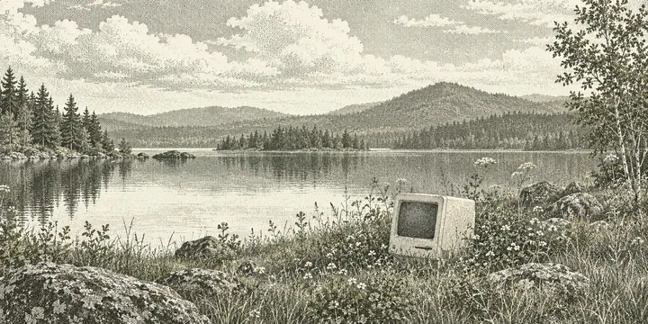

Philipp Beer
I’m an investor and builder based in Berlin. I manage funds and make things out of curiosity.

These days
My main work is managing w3 Liquid Crypto Fund.
I manage two small venture funds, Common Thread I & II. Here and there, I invest in startups as an angel.
Through Tapestry, I put AI to work for businesses.
Previously, I worked at Google and led growth at Nuri.
A few things I’ve made
- FundFunkBerlin’s street notices, turned into songs.
- FramewerkAn explorable map of mental models and how they connect.
- Beaches of MallorcaFind a beach for the day, with weather and sea conditions.
Much of what I build is private:
- Tools for the funds I manage, covering investment research, fund operations, and investor reporting.
- A tool for consultants to compare how different AI models describe and recommend brands.
- With Tapestry, tools that bring investment data and documents together so teams can ask questions with AI.
On GitHub
@depose28
January 2026: 26; February 2026: 296; March 2026: 269; April 2026: 13; May 2026: 178; June 2026: 270; July 2026: 585; August 2026: 633; September 2026: 556; October 2026: 98. Other months have no recorded contributions.
Updated